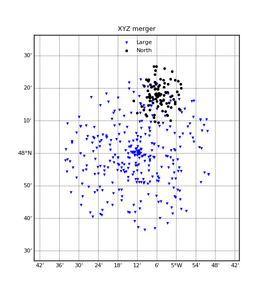

1.3.4.2.1.4. Gestion d’une banque de bathymétries XYZ¶
Note
Dans l’exemple ci-dessous, le fichier de recensement des bathymétries est spécifié manuellement. Vous n’aurez normalement pas à le spécifier car il en existe un par défaut.
Voir : XYZBathyBank (et éventuellement XYZBathyBankClient et XYZBathyMixer).

# Creation de fausses bathymetries xyz
import numpy as N, os, pylab as P
from vacumm.bathy.bathy import XYZBathy, XYZBathyBank
# - fonction generatrice
def gene_bathy(xc, yc, r, n):
noise = N.random.random(n)
a = N.random.random(n)*N.pi*2
r = r*N.random.random(n)
x = xc + r*N.cos(a)
y = yc + r*N.sin(a)
return N.asarray([x, y, N.exp(-(x-xc)**2/r**2-(y-yc)**2/r**2)*30.+noise]).transpose()
# - bathy sud
fsouth = __file__[:-2]+'bathy_south.xyz'
N.savetxt(fsouth, gene_bathy(-5.1, 48.1, .15, 200))
# - bathy nord
fnorth = __file__[:-2]+'bathy_north.xyz'
N.savetxt(fnorth, gene_bathy(-5.1, 48.3, .15, 100))
# - bathy large
flarge = __file__[:-2]+'bathy_large.xyz'
N.savetxt(flarge, gene_bathy(-5.2, 48., .4, 300))
# On stocke dans une banque
# - from scratch
bank_file = __file__[:-2]+'bank.cfg'
if os.path.exists(bank_file): os.remove(bank_file)
# - init de la banque
bank = XYZBathyBank(bank_file)
# - ajout des fichiers bathy
bank.add(fsouth, id='south', long_name='South')
bank.add(fnorth, id='north', long_name='North')
bank.add(flarge) # id auto
# you can also use: bank += flarge
# - on verifie ce qu'on a
print bank
# Petites modifs
# - id
bank['bathy.bathy.xyz.bathybank.bathy_large'].id = 'large'
# - transparence
bank['north'].transp = False
# - long name
bank['large'].long_name = 'Large'
# Suppression d'une bathy
bank.remove('south')
# on peut aussi utiliser:
# >>> bank -= 'south'
# >>> bank -= bsouth
# >>> del bank['south']
# Chargement d'une bathy
bsouth = bank['north'].load()
# Plot de l'ensemble
bank.plot(size=15, map_proj='cyl', map_res=None, savefigs=__file__,
savefigs_pdf=True, show=False)
P.close()